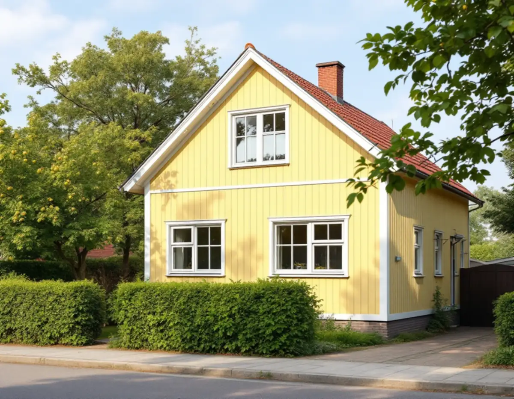
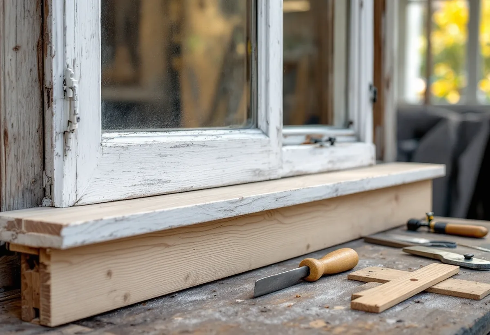

Besök
Vi öppnar varje båge, känner efter röta i bottenstyckena och ser hur innerbågen sluter.

När egnahemmen i Stuvsta, Snättringe och Huddinge villastad byggdes var de traditionella okopplade fönstren fortfarande vanliga i förorternas egnahem.
Beskriv jobbet kort.
Något blev fel. Kontrollera uppgifterna eller ring 08 12 410 276.
Vi tittar på jobbet på plats innan du får offert.
Du ser vad som ingår och vad det kostar.
Vi drar av ROT direkt och sköter ansökan.
Geal Entreprenad AB, Bromma. Org.nr 559303-7566.

Geal Entreprenad AB renoverar sådana fönster i Huddinge. Vi lagar bottenstycken, kittar om, målar och tätar, så att de gamla bågarna kan sitta kvar.
Huddinge kommuns kulturmiljöprogram beskriver hur egnahemsrörelsen kom igång på allvar efter 1909, när staten förmedlade lån så att arbetare och lägre tjänstemän kunde bygga enkla småhus på billig mark. I Huddinge började rörelsen genom fil. dr Adrian Molin, som satt i den statliga egnahemskommittén 1911 och hade intressen i flera tomtbolag, bland dem Fullersta AB som 1912 köpte Fullersta gårds marker väster om järnvägen. Intill Huddinge och Stuvsta stationer växte Huddinge villastad och Stuvsta egnahemsområde fram, och på 1920-talet började Segeltorp och Snättringe styckas av.
Programmet sammanfattar egnahemsområdena från 1910–1940-talen med träpanel, enkelt spröjsade fönster och tegeltäckta sadel- eller brutna tak. Enligt kommunen kan riktlinjerna tillämpas på alla småhusområden från den tiden, även de som inte är utpekade, och all bebyggelse omfattas av varsamhetskraven i plan- och bygglagen. Programmet råder att byggnadernas ursprungliga arkitektoniska uttryck värnas.
Riksantikvarieämbetets skrift om fönster konstaterar att de traditionella okopplade fönstren var vanliga i förorternas egnahemsbebyggelse ännu i slutet av 1920-talet, medan de kopplade bågarna kom först i de större städerna. Äldre okopplade fönster har enligt skriften visat sig ha mycket goda egenskaper både för energi och ljud. De saknade från början tätningslister, och när innerbågar började användas tätades de med klisterremsor på insidan.
I dag kan klisterremsorna bytas mot en gummilist som passar falsen, och gångjärn och stängningsbeslag justeras så att bågen sluter tätt mot karmen. Skriften förklarar varför det är innerbågen som ska tätas: om den läcker kondenserar fukt på ytterbågens insida, rinner ned och samlas i kittfalsen, och där börjar rötan. Risken minskar om glaset är kittat även på falsens insida och om färgen tätar mellan glas och bågträ.
Det är framför allt bottenstyckena i karm och båge som angrips av röta, skriver Riksantikvarieämbetet, och oftast går det att byta bara de skadade partierna. Vid mindre skador kan bågens yttre del halvsulas med nytt virke. Har skadan gått längre byts hela bågens nederdel, och ofta även den nedre delen av sidostyckena. Innan beslagen lossas mäter vi bågens diagonaler, så att formen inte ändras när den sätts ihop igen.
Lagningsvirket ska vara furu med hög kärnvedsandel, högt kådinnehåll, täta årsringar och hög densitet, och årsringarna ska ligga åt samma håll som i det gamla virket, så att det inte uppstår spänningar. Karmens bottenstycke kan ofta bytas utan att karmen tas ur väggen. Lagningar med kitt eller plastiskt trä håller enligt skriften i regel inte särskilt länge, så dem använder vi bara som tillfällig åtgärd.
Folkhemsbygget från 1940–1960-talen gav enligt kulturmiljöprogrammet små enhetliga villor, kedjehus och radhus. Boverket skriver att det främst är byggnader som är byggda mellan åren 1940 och 1970 som innehåller asbest, men att den även kan finnas i äldre byggnader, och fönsterkitt och fogmassor finns bland de material verket listar. Boverkets energiguide råder dessutom att undersöka om gamla fogmassor innehåller till exempel PCB eller asbest, som är saneringspliktigt, och påpekar att kitt kan innehålla asbest. På hus från den tiden tar vi därför prov innan kitt och fogar tas bort.
Riksantikvarieämbetet noterar att de omfattande skador som visat sig på 1960- och 1970-talens fönster delvis beror på olämpligt lösta konstruktionsdetaljer. Boverket nämner treglasfönster från sjuttiotalet, där glaskassetten har slutat fungera och monteringen i instickskarmar ger stora energiförluster, som exempel på fönster som kan behöva bytas. Läs om kulturmiljöer och lov vid fönsterbyte i Huddinge och om val av nya fönster på sidan om fönsterbyte. För panel och foder runt fönstret, se snickare i Huddinge.
Vi öppnar varje båge, känner efter röta i bottenstyckena och ser hur innerbågen sluter.
På hus byggda 1940–1970 tas prov på kitt och fogar innan något skrapas bort.
Lagning, kittning, målning och tätning står var för sig i det skriftliga förslaget.
Skadade bottenstycken halvsulas eller byts mot kärnrik furu.
Falsarna grundas, kittas och målas i tunna lager.
Innerbågen får gummilist och beslagen justeras.
Att reparera och måla fönster på ett småhus ger rotavdrag enligt Skatteverket. Är ett kedjehus eller radhus från folkhemsåren en bostadsrätt är reglerna snävare: avdrag ges för arbete på insidan av befintliga fönster, som att byta glaset i den inre bågen, montera tätningslist eller måla insidan, men inte för arbete mellan bågarna eller på utsidan.
Avdraget är 30 procent av arbetskostnaden, högst 50 000 kr per person och år och högst 75 000 kr ihop med rutavdrag. Bara arbetskostnaden räknas, och avdraget dras direkt på fakturan.
Antalet bågar, hur många bottenstycken som måste lagas, om prov på kitt och fogar behövs, om gammal färg ska tas bort helt och vilken tätning innerbågen ska få styr kostnaden. Efter ett gratis platsbesök får du ett skriftligt kostnadsförslag.
Byta eller renovera fönster.
Fönsterbyte i Stockholm →Takbyte, takbesiktning och plåtarbeten.
Takläggare i Huddinge →Stuvsta, Snättringe och Skogås.
Takrenovering i Huddinge →Avlopp, egen brunn och ritningar.
Attefallshus i Huddinge →Grannar, tomtgräns och lovärendet.
Byggföretag i Huddinge →Nytt trä i en gammal fasad.
Fasadmålning i Huddinge →Egnahem, grupphus och 70-talsvillor.
Fönsterbyte i Huddinge →Egnahem, grupphus och permanentade stugor.
Badrumsrenovering i Huddinge →Villor, grupphus och fritidshus i Huddinge.
Fasadrenovering i Huddinge →Grupphus, radhus och kedjehus i Huddinge.
Golvläggare i Huddinge →Slipa golvet och byt ytbehandling.
Golvslipning i Huddinge →Grupphus, egnahem och stugor.
Köksrenovering i Huddinge →Fasad, fönster och rum i Huddinge.
Målare i Huddinge →Rännor, dagvatten och brutna tak.
Plåtslagare i Huddinge →Altaner, förråd och gäststugor.
Snickare i Huddinge →Tyngre tak, stugor och landsbygd.
Takbyte i Huddinge →Ny tapet på lagad spännpapp.
Tapetsering i Huddinge →Råd för tre epoker av småhus.
Tillbyggnad i Huddinge →Rekordårens hus inifrån och ut.
Totalrenovering i Huddinge →Eller ring 08 12 410 276, mån–fre 08–17.
Beskriv jobbet kort.
Något blev fel. Kontrollera uppgifterna eller ring 08 12 410 276.